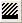
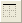
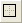
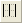

Die Symbolleiste Stil zum Formatieren von Beschriftungen und anderen Anmerkungen samt Tabellenobjekten und Diagrammeigenschaften (Linienstil, Linienfarbe, Symbolfarbe, Füllmuster etc.) verwendet.
| |
Legt die Füllfarbe des ausgewählten Objekts fest. |
| |
Legt die Linien-/Rahmenfarbe des ausgewählten Objekts fest. |
| |
Öffnet den Dialog 3D-Beleuchtungssteuerung. |
|
Wendet das Muster auf die ausgewählte Zeichnung an. | |
| |
Legt die Linien-/Rahmenfarbe des ausgewählten Objekts fest. |
| |
Legt die Linien-/Rahmenbreite (Pkt.- Größe) des ausgewählten Objekts fest. |
|
Legt das Füllmuster des ausgewählten Objekts fest. | |
| |
Legt die Füllmusterbreite des ausgewählten Objekts fest. |
|  |
Legt die Füllmusterfarbe des ausgewählten Objekts fest. |
| |
Löscht die Rahmen im ausgewählten Zellbereich des Arbeitsblatts. |
| |
Fügt einen linken Rand in den ausgewählten Zellbereich des Arbeitsblatts ein. |
|  |
Fügt einen oberen Rand in den ausgewählten Zellbereich des Arbeitsblatts ein. |
| |
Fügt einen rechten Rand in den ausgewählten Zellbereich des Arbeitsblatts ein. |
| |
Fügt einen unteren Rand in den ausgewählten Zellbereich des Arbeitsblatts ein. |
|  |
Fügt die Ränder des Rahmens in den ausgewählten Zellbereich des Arbeitsblatts ein. |
| |
Fügt innere horizontale Ränder in den ausgewählten Zellbereich des Arbeitsblatts ein. |
| |
Fügt innere vertikale Ränder in den ausgewählten Zellbereich des Arbeitsblatts ein. |
| |
Fügt innere horizontale und vertikale Ränder in den ausgewählten Zellbereich des Arbeitsblatts ein. |
| |
Fügt alle horizontalen Ränder in den ausgewählten Zellbereich des Arbeitsblatts ein. |
|  |
Fügt alle vertikale Ränder in den ausgewählten Zellbereich des Arbeitsblatts ein. |
| |
Fügt alle Ränder in den ausgewählten Zellbereich des Arbeitsblatts ein. |
| |
Zellen zusammenfügen |
Um die Symbolleiste Stil zum Bearbeiten von Diagrammeigenschaften zu verwenden, müssen Sie zuerst auf die Datenzeichnung klicken und sie auswählen. Beachten Sie die "Bedienelemente" im ausgewählten Diagramm.

Sobald eine Datenzeichnung oder eine Gruppe von Datenzeichnungen ausgewählt sind, können Sie verschiedene Eigenschaften der Zeichnung -- Symbolfarbe, Linienstil und -breite, Füllmuster, Farbskalen für gruppierte Datenzeichnungen -- unter Verwendung der Symbolleiste Stil ändern. Dies ist schneller, da es verhindert, dass Sie den Dialog Details Zeichnung öffnen müssen.
Beachten Sie, dass nicht alle Diagrammeigenschaften über die Symbolleiste Stil geändert werden können (um beispielsweise den Symboltyp des Diagramms zu ändern, müssen Sie den Dialog Details Zeichnung öffnen).
Um auf eine Gruppe von Datenzeichnungen eine inkrementelle Farbskala anzuwenden:
Origin enthält einige vordefinierte Farbskala. Diese sind sogar ein Vorlagentyp (siehe Erzeugen von Vorlagen). Um zu lernen, wie Sie eine neue Farbskala erstellen können, lesen Sie bitte Farbskalen für Gruppen.
Um die Symbolleiste Stil zur Bearbeitung von Tabellen verwenden zu können, müssen Sie zuerst eine Tabelle auswählen. Eine Tabelle kann es sowohl im Diagramm als auch im Arbeitsblatt geben. Nachdem Sie eine Analyse wie beispielsweise die lineare Anpassung durchgeführt haben, können Ergebnistabellen sowohl im Diagramm eingefügt worden sein als auch im neu erstellten Ergebnisblatt des Arbeitsblatts erscheinen. Ebenso können Sie eine eigene Tabelle im Diagramm erstellen, indem Sie mit der rechten Maustaste auf die Stelle klicken, an der die Tabelle erscheinen soll, und im Kontextmenü Neue Tabelle auswählen. Sie können eine Tabelle in einem Arbeitsblatt erstellen, indem Sie einen Zellenbereich eines Arbeitsblatts und einen Rahmen um diese Auswahl setzen.